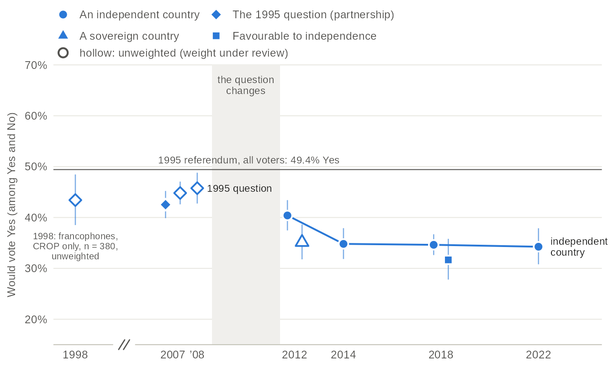
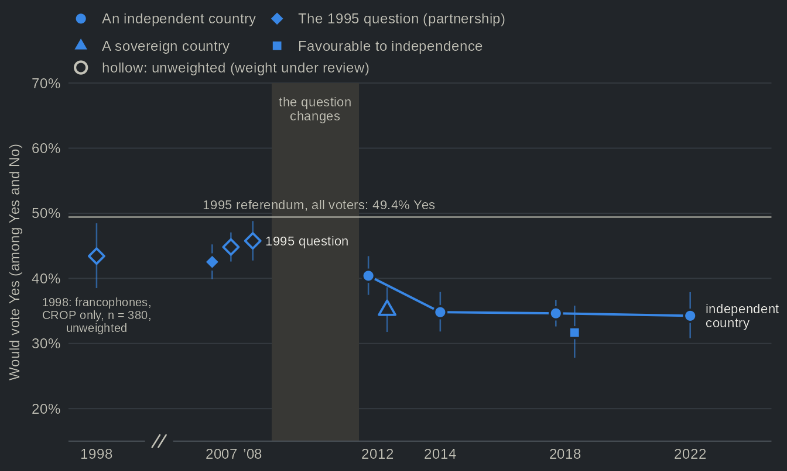

A generation gap that reversed: support for sovereignty, 1998-2022
Source:vignettes/articles/sovereignty-generations.Rmd
sovereignty-generations.RmdIn 2007 the youngest francophone voters were the most sovereigntist: 58% of those born from 1975 to 1989 would have voted Yes to the 1995 question, against 38% of those born in 1944 or before. That question offered a partnership with Canada and draws more Yes than the question on an independent country asked from 2012 on, so the levels of 2007 and 2022 cannot be compared; the order of the cohorts can. Within the independence question, the order has flipped since 2012: the cohort born from 1975 to 1989 fell from 54% Yes to 38% in 2022, and francophones born in 1990 or after from 53% to 30%, the lowest of any cohort, while the cohort born from 1945 to 1959 stayed between 50% and 54%. The cohort that carried the Yes side in the 2000s did not keep its lead. The youngest cohort is open-ended, so its make-up changes: born from 1990 to 1994 (aged 18 to 22) in 2012, from 1990 to 2004 in 2022, and in 2018 it includes 16- and 17-year-olds.
One variable, several questions
sov_support pools the referendum questions of every
study that asked one. The wording changes between studies, and
sov_support__type says which question each value
answers:
h <- qes_harmonize(
studies = qz_studies,
targets = c("sov_support", "birth_year", "lang_mother"),
missing = "reasons", quiet = TRUE
)
table(h$study, h$sov_support__type)
#>
#> independence sovereign_country partnership_1995_push
#> qes_crop_2007_2010 0 0 0
#> qes1998 0 0 1483
#> qes2007 0 0 2175
#> qes2007_panel 0 0 2050
#> qes2008 0 0 1151
#> qes2012 1505 0 0
#> qes2012_panel 0 844 0
#> qes2014 1517 0 0
#> qes2018 3072 0 0
#> qes2018_panel 0 0 0
#> qes2022 1521 0 0
#>
#> partnership_1995 favour
#> qes_crop_2007_2010 0 0
#> qes1998 0 0
#> qes2007 0 0
#> qes2007_panel 0 0
#> qes2008 0 0
#> qes2012 0 0
#> qes2012_panel 0 0
#> qes2014 0 0
#> qes2018 0 0
#> qes2018_panel 0 842
#> qes2022 0 0Support depends on the wording, so this page compares cohorts within one wording and one study, and draws the wordings as separate series.
Support by study and wording


Source: qesR, pooled sov_support, every study that asked a referendum question (all respondents). The line joins the independence question in the Quebec Election Studies (just left of each election); the Durand panels are just right of it. The 1998 point is the CROP half of the 1998 polls only (CREATEC did not ask the question): francophones only, unweighted, from a recontact that over-selected undecided voters and refusers, so it is not joined to the others and is not comparable with the 1995 result of all voters. Bars: 95% confidence intervals (logit). Weighted with the weight of the wave that asked; hollow: unweighted, weight under review. Favourable or opposed (2018 panel) is collapsed to yes or no, graded approximate. The x axis is in years, with a break between 1998 and 2007.
Table view
| Election | Study | Question | Yes, % [95% CI] | n | Weighting | Grade |
|---|---|---|---|---|---|---|
| 1998 | 1998 polls (CROP half, francophones) | The 1995 question (partnership) | 43.4 [38.5, 48.5] | 380 | unweighted (weight under review) | comparable |
| 2007 | QES 2007 | The 1995 question (partnership) | 42.5 [39.9, 45.2] | 2011 | weighted | identical |
| 2007 | 2007 panel | The 1995 question (partnership) | 44.8 [42.6, 47.1] | 1899 | unweighted (weight under review) | comparable |
| 2008 | QES 2008 | The 1995 question (partnership) | 45.8 [42.7, 48.8] | 1038 | unweighted (weight under review) | comparable |
| 2012 | QES 2012 | An independent country | 40.4 [37.5, 43.4] | 1323 | weighted | identical |
| 2012 | 2012 panel | A sovereign country | 35.1 [31.8, 38.6] | 743 | unweighted (weight under review) | identical |
| 2014 | QES 2014 | An independent country | 34.8 [31.8, 37.9] | 1353 | weighted | identical |
| 2018 | QES 2018 | An independent country | 34.6 [32.6, 36.7] | 2558 | weighted | comparable |
| 2018 | 2018 panel | Favourable to independence | 31.7 [27.8, 35.8] | 780 | weighted | approximate |
| 2022 | QES 2022 | An independent country | 34.3 [30.8, 37.9] | 1284 | weighted | comparable |
What to notice:
- The 1995 question, which offered a partnership with Canada, draws more Yes than a question on an independent country: the two are different series, and the grey band marks where the Quebec Election Studies changed question.
- On the independence question, support in the Quebec Election Studies falls from 40% in 2012 to about 34% from 2014 on.
- The Durand panels asked other wordings; each is a point of its own.
Cohorts over time


Source: qesR, pooled sov_support (type independence), birth_year and lang_mother; QES 2012, 2014, 2018 and 2022, francophone respondents, each study weighted with the weight of the wave that asked. Bands: 95% confidence intervals (logit); the intervals of every cohort are in the next figure and the table view, which also gives all respondents and the 2007 and 2008 studies (1995 question). The line of the oldest cohort rests on fewer than 100 respondents in 2012, 2014, 2022. The youngest cohort is open-ended: born 1990-1994 (aged 18 to 22) in 2012, born 1990-2004 in 2022; the 2018 study sampled people aged 16 and over.
Table view
| Respondents | Election | Study | Question | Cohort | Yes, % [95% CI] | n | Weighting |
|---|---|---|---|---|---|---|---|
| All respondents | 2007 | QES 2007 | The 1995 question (partnership) | born 1944 or before | 35.1 [29.9, 40.8] | 381 | weighted |
| All respondents | 2007 | QES 2007 | The 1995 question (partnership) | born 1945-59 | 44.7 [40.2, 49.4] | 673 | weighted |
| All respondents | 2007 | QES 2007 | The 1995 question (partnership) | born 1960-74 | 41.6 [36.4, 46.9] | 486 | weighted |
| All respondents | 2007 | QES 2007 | The 1995 question (partnership) | born 1975-89 | 47.9 [42.2, 53.7] | 438 | weighted |
| All respondents | 2008 | QES 2008 | The 1995 question (partnership) | born 1944 or before | 39.7 [33.3, 46.5] | 209 | unweighted (weight under review) |
| All respondents | 2008 | QES 2008 | The 1995 question (partnership) | born 1945-59 | 53.8 [47.8, 59.8] | 262 | unweighted (weight under review) |
| All respondents | 2008 | QES 2008 | The 1995 question (partnership) | born 1960-74 | 43.9 [38.7, 49.3] | 330 | unweighted (weight under review) |
| All respondents | 2008 | QES 2008 | The 1995 question (partnership) | born 1975-89 | 46.0 [39.4, 52.7] | 213 | unweighted (weight under review) |
| All respondents | 2008 | QES 2008 | The 1995 question (partnership) | born 1990+ | n < 30 | 5 | unweighted (weight under review) |
| All respondents | 2012 | QES 2012 | An independent country | born 1944 or before | 24.0 [16.2, 34.1] | 91 | weighted |
| All respondents | 2012 | QES 2012 | An independent country | born 1945-59 | 42.8 [36.4, 49.4] | 258 | weighted |
| All respondents | 2012 | QES 2012 | An independent country | born 1960-74 | 39.2 [34.2, 44.3] | 394 | weighted |
| All respondents | 2012 | QES 2012 | An independent country | born 1975-89 | 46.0 [41.2, 50.9] | 439 | weighted |
| All respondents | 2012 | QES 2012 | An independent country | born 1990+ | 45.4 [36.9, 54.2] | 141 | weighted |
| All respondents | 2014 | QES 2014 | An independent country | born 1944 or before | 26.3 [18.2, 36.5] | 128 | weighted |
| All respondents | 2014 | QES 2014 | An independent country | born 1945-59 | 43.6 [37.4, 49.9] | 354 | weighted |
| All respondents | 2014 | QES 2014 | An independent country | born 1960-74 | 31.4 [26.1, 37.2] | 393 | weighted |
| All respondents | 2014 | QES 2014 | An independent country | born 1975-89 | 29.0 [23.6, 35.1] | 307 | weighted |
| All respondents | 2014 | QES 2014 | An independent country | born 1990+ | 41.6 [33.4, 50.2] | 171 | weighted |
| All respondents | 2018 | QES 2018 | An independent country | born 1944 or before | 30.3 [25.4, 35.7] | 356 | weighted |
| All respondents | 2018 | QES 2018 | An independent country | born 1945-59 | 37.2 [33.4, 41.1] | 627 | weighted |
| All respondents | 2018 | QES 2018 | An independent country | born 1960-74 | 36.8 [32.5, 41.3] | 498 | weighted |
| All respondents | 2018 | QES 2018 | An independent country | born 1975-89 | 33.9 [29.1, 39.0] | 387 | weighted |
| All respondents | 2018 | QES 2018 | An independent country | born 1990+ | 31.5 [27.4, 36.0] | 655 | weighted |
| All respondents | 2022 | QES 2022 | An independent country | born 1944 or before | 40.4 [21.9, 62.2] | 60 | weighted |
| All respondents | 2022 | QES 2022 | An independent country | born 1945-59 | 40.7 [34.0, 47.6] | 318 | weighted |
| All respondents | 2022 | QES 2022 | An independent country | born 1960-74 | 35.6 [29.4, 42.4] | 319 | weighted |
| All respondents | 2022 | QES 2022 | An independent country | born 1975-89 | 31.7 [25.7, 38.3] | 303 | weighted |
| All respondents | 2022 | QES 2022 | An independent country | born 1990+ | 26.7 [20.8, 33.5] | 283 | weighted |
| Francophones | 2007 | QES 2007 | The 1995 question (partnership) | born 1944 or before | 38.1 [32.5, 44.0] | 343 | weighted |
| Francophones | 2007 | QES 2007 | The 1995 question (partnership) | born 1945-59 | 51.2 [46.4, 56.0] | 588 | weighted |
| Francophones | 2007 | QES 2007 | The 1995 question (partnership) | born 1960-74 | 51.7 [46.0, 57.3] | 406 | weighted |
| Francophones | 2007 | QES 2007 | The 1995 question (partnership) | born 1975-89 | 57.8 [51.8, 63.5] | 379 | weighted |
| Francophones | 2008 | QES 2008 | The 1995 question (partnership) | born 1944 or before | 45.4 [38.2, 52.9] | 174 | unweighted (weight under review) |
| Francophones | 2008 | QES 2008 | The 1995 question (partnership) | born 1945-59 | 62.1 [55.5, 68.3] | 219 | unweighted (weight under review) |
| Francophones | 2008 | QES 2008 | The 1995 question (partnership) | born 1960-74 | 50.5 [44.7, 56.4] | 275 | unweighted (weight under review) |
| Francophones | 2008 | QES 2008 | The 1995 question (partnership) | born 1975-89 | 52.7 [45.5, 59.9] | 182 | unweighted (weight under review) |
| Francophones | 2008 | QES 2008 | The 1995 question (partnership) | born 1990+ | n < 30 | 4 | unweighted (weight under review) |
| Francophones | 2012 | QES 2012 | An independent country | born 1944 or before | 37.0 [25.6, 50.0] | 62 | weighted |
| Francophones | 2012 | QES 2012 | An independent country | born 1945-59 | 53.6 [46.4, 60.6] | 214 | weighted |
| Francophones | 2012 | QES 2012 | An independent country | born 1960-74 | 46.2 [40.6, 51.9] | 327 | weighted |
| Francophones | 2012 | QES 2012 | An independent country | born 1975-89 | 54.0 [48.8, 59.2] | 374 | weighted |
| Francophones | 2012 | QES 2012 | An independent country | born 1990+ | 53.5 [44.1, 62.6] | 120 | weighted |
| Francophones | 2014 | QES 2014 | An independent country | born 1944 or before | 33.2 [23.1, 45.2] | 90 | weighted |
| Francophones | 2014 | QES 2014 | An independent country | born 1945-59 | 50.7 [43.9, 57.5] | 280 | weighted |
| Francophones | 2014 | QES 2014 | An independent country | born 1960-74 | 40.5 [34.2, 47.2] | 288 | weighted |
| Francophones | 2014 | QES 2014 | An independent country | born 1975-89 | 38.1 [31.2, 45.6] | 214 | weighted |
| Francophones | 2014 | QES 2014 | An independent country | born 1990+ | 50.8 [41.1, 60.4] | 124 | weighted |
| Francophones | 2018 | QES 2018 | An independent country | born 1944 or before | 38.2 [32.2, 44.4] | 280 | weighted |
| Francophones | 2018 | QES 2018 | An independent country | born 1945-59 | 49.5 [44.9, 54.2] | 471 | weighted |
| Francophones | 2018 | QES 2018 | An independent country | born 1960-74 | 49.0 [43.7, 54.3] | 362 | weighted |
| Francophones | 2018 | QES 2018 | An independent country | born 1975-89 | 43.5 [37.6, 49.6] | 288 | weighted |
| Francophones | 2018 | QES 2018 | An independent country | born 1990+ | 37.4 [32.5, 42.5] | 544 | weighted |
| Francophones | 2022 | QES 2022 | An independent country | born 1944 or before | 41.2 [26.8, 57.2] | 51 | weighted |
| Francophones | 2022 | QES 2022 | An independent country | born 1945-59 | 54.2 [47.5, 60.8] | 248 | weighted |
| Francophones | 2022 | QES 2022 | An independent country | born 1960-74 | 44.4 [37.8, 51.1] | 243 | weighted |
| Francophones | 2022 | QES 2022 | An independent country | born 1975-89 | 38.1 [31.8, 44.7] | 245 | weighted |
| Francophones | 2022 | QES 2022 | An independent country | born 1990+ | 30.5 [24.2, 37.6] | 215 | weighted |
What to notice:
- The youngest cohort (born in 1990 or after) falls from 53% Yes in 2012 to 30% in 2022.
- The cohort born from 1975 to 1989 falls from 54% to 38%. The oldest cohort (born in 1944 or before) does not change detectably: 62 francophones of that cohort answered in 2012 and 51 in 2022, and the cohort also shrinks through mortality.
- The cohort born from 1945 to 1959, who voted in the referendums of 1980 and 1995, is the most sovereigntist in 2022 (54%).
The gradient flips


Source: qesR, pooled sov_support, birth_year and lang_mother; one Quebec Election Study per election, francophone respondents. 2007 and 2008 asked the 1995 question, with the undecided pushed; 2012 to 2022 asked about an independent country, so compare the order of the cohorts within a panel, not the levels across the two questions. Bars: 95% confidence intervals (logit). Weighted; hollow (2008): unweighted, weight under review. Cohorts of fewer than 30 respondents are not drawn.
Table view
| Election | Question | Cohort | Yes, % [95% CI] | n | Weighting |
|---|---|---|---|---|---|
| 2007 | The 1995 question (partnership) | born 1944 or before | 38.1 [32.5, 44.0] | 343 | weighted |
| 2007 | The 1995 question (partnership) | born 1945-59 | 51.2 [46.4, 56.0] | 588 | weighted |
| 2007 | The 1995 question (partnership) | born 1960-74 | 51.7 [46.0, 57.3] | 406 | weighted |
| 2007 | The 1995 question (partnership) | born 1975-89 | 57.8 [51.8, 63.5] | 379 | weighted |
| 2008 | The 1995 question (partnership) | born 1944 or before | 45.4 [38.2, 52.9] | 174 | unweighted (weight under review) |
| 2008 | The 1995 question (partnership) | born 1945-59 | 62.1 [55.5, 68.3] | 219 | unweighted (weight under review) |
| 2008 | The 1995 question (partnership) | born 1960-74 | 50.5 [44.7, 56.4] | 275 | unweighted (weight under review) |
| 2008 | The 1995 question (partnership) | born 1975-89 | 52.7 [45.5, 59.9] | 182 | unweighted (weight under review) |
| 2012 | An independent country | born 1944 or before | 37.0 [25.6, 50.0] | 62 | weighted |
| 2012 | An independent country | born 1945-59 | 53.6 [46.4, 60.6] | 214 | weighted |
| 2012 | An independent country | born 1960-74 | 46.2 [40.6, 51.9] | 327 | weighted |
| 2012 | An independent country | born 1975-89 | 54.0 [48.8, 59.2] | 374 | weighted |
| 2012 | An independent country | born 1990+ | 53.5 [44.1, 62.6] | 120 | weighted |
| 2014 | An independent country | born 1944 or before | 33.2 [23.1, 45.2] | 90 | weighted |
| 2014 | An independent country | born 1945-59 | 50.7 [43.9, 57.5] | 280 | weighted |
| 2014 | An independent country | born 1960-74 | 40.5 [34.2, 47.2] | 288 | weighted |
| 2014 | An independent country | born 1975-89 | 38.1 [31.2, 45.6] | 214 | weighted |
| 2014 | An independent country | born 1990+ | 50.8 [41.1, 60.4] | 124 | weighted |
| 2018 | An independent country | born 1944 or before | 38.2 [32.2, 44.4] | 280 | weighted |
| 2018 | An independent country | born 1945-59 | 49.5 [44.9, 54.2] | 471 | weighted |
| 2018 | An independent country | born 1960-74 | 49.0 [43.7, 54.3] | 362 | weighted |
| 2018 | An independent country | born 1975-89 | 43.5 [37.6, 49.6] | 288 | weighted |
| 2018 | An independent country | born 1990+ | 37.4 [32.5, 42.5] | 544 | weighted |
| 2022 | An independent country | born 1944 or before | 41.2 [26.8, 57.2] | 51 | weighted |
| 2022 | An independent country | born 1945-59 | 54.2 [47.5, 60.8] | 248 | weighted |
| 2022 | An independent country | born 1960-74 | 44.4 [37.8, 51.1] | 243 | weighted |
| 2022 | An independent country | born 1975-89 | 38.1 [31.8, 44.7] | 245 | weighted |
| 2022 | An independent country | born 1990+ | 30.5 [24.2, 37.6] | 215 | weighted |
What to notice:
- In 2007, on the 1995 question, support falls with age: the cohort born from 1975 to 1989 is +20 pts above the oldest.
- In 2018 the youngest and the oldest cohorts are level; in 2022 the youngest is the least sovereigntist, −24 pts from the cohort born from 1945 to 1959 (54%, n = 248).
- The intervals of the oldest cohort (born in 1944 or before) are the widest: fewer than 100 francophones of that cohort answered in 2012, 2014 and 2022.
About the data
- Studies. Every study that asked a referendum question: the 1998 polls, the Quebec Election Studies of 2007 to 2022 and the Durand panels. The CROP polls did not ask one.
-
Variable.
sov_support, the pooled referendum vote, as the share of Yes among those who would vote Yes or No; those who would not vote or spoil, did not know or refused are left out.sov_support__itemnames each study’s question, andqes_spec("pooled")the precedence of the wordings when a study asked several. -
Wordings. An independent country (2012 to 2022), a
sovereign country (2012 panel), the 1995 question on sovereignty with a
partnership offer, the undecided pushed (1998, 2007, 2007 panel, 2008),
and favourable or opposed to independence (2018 panel), collapsed to yes
or no and graded
approximate. - Timing and population. The 2022 study (campaign wave), the 1998 polls and the 2007 and 2012 panels asked the question before the election; the other studies after it. Each is weighted with the weight of the wave that asked. The 2018 study sampled people aged 16 and over.
-
Cohorts. From
birth_year, which the 2007 to 2022 Quebec Election Studies asked. Francophones are respondents whoselang_motheris French; in 2022 those who ticked two languages are left out. -
Weights. The recommended weight of the wave that
asked, through
qes_design(). The 1998 polls, the 2008 study and the 2007 and 2012 Durand panels are unweighted (weights under review) and drawn hollow; the 2018 panel uses its reviewed weight.